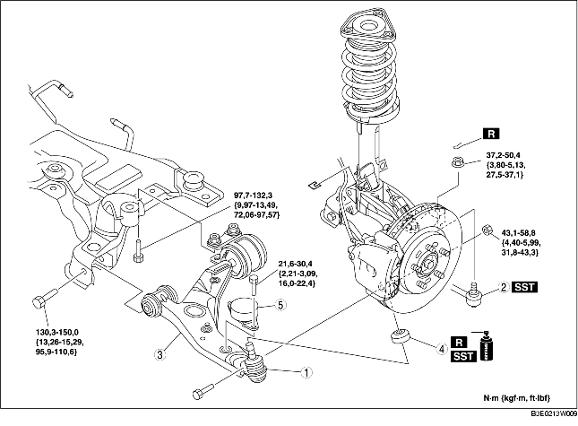

1. Déposer les différents éléments selon l'ordre indiqué dans le tableau.
2. Pour la repose, suivre l'ordre inverse de la dépose.
3. Inspecter la géométrie des roues, et opérer les réglages nécessaires. (voir la section GEOMETRIE DES ROUES AVANT.)

.
|
1
|
Joint à rotule de bras inférieur avant
|
|
2
|
Joint à rotule d'embout de biellette de direction
(voir la section DEPOSE/REPOSE DE BARRE TRANSVERSALE AVANT.)
|
|
3
|
Bras de suspension inférieur avant
(voir la section Note sur la dépose de bras inférieur avant.)
(voir la section Note sur la repose de bras inférieur avant.)
|
|
4
|
Pare-poussière
(voir la section Note sur la repose de pare-poussière.)
|
|
5
|
Amortisseur dynamique
|
1. Déposer le boulon central de fixation de moteur N° 1. (véhicules à moteur LF)
2. Déplacer légèrement le moteur et la boîte-pont vers l'avant du véhicule. (véhicules à moteur LF)
3. Déposer le boulon latéral arrière du bras inférieur avant.
4. Déposer le bras inférieur avant.
1. Essuyer la graisse du pivot à rotule.
2. Enduire de graisse l'intérieur du pare-poussière neuf.
3. Appuyer sur le support sur le joint à rotule à l'aide duSST.
4. Nettoyer l'excès de graisse.
1. Reposer temporairement le bras inférieur avant.
2. Reposer la fixation de moteur N° 1. (véhicules à moteur LF)
3. Serrer le boulon latéral arrière du bras inférieur avant.
4. Serrer le boulon latéral avant du bras inférieur avant.
5. Serrer l'écrou (joint à rotule de bras inférieur avant).